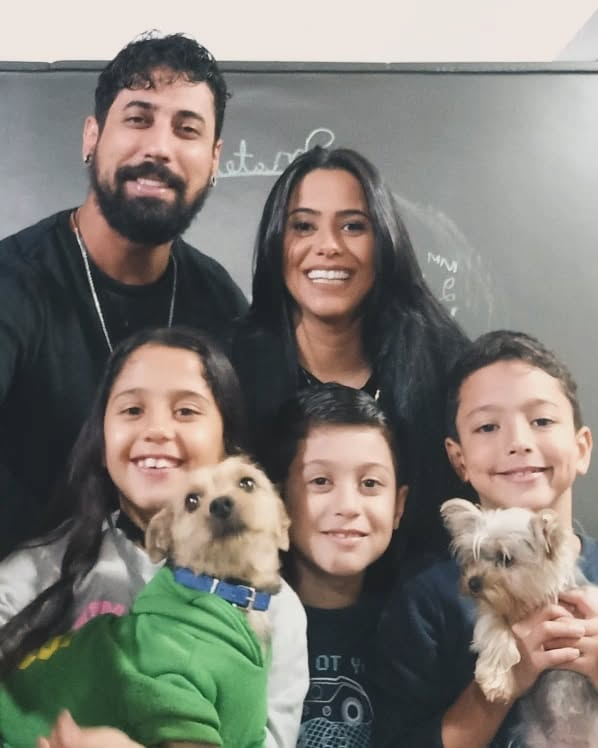
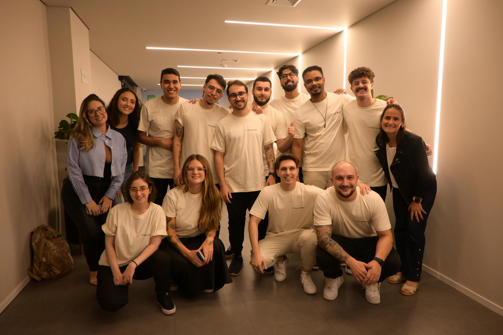

A evolução das IAs e o futuro do trabalho humano
Diego Borges · @eudiegoborgs · 2026


antes de começar quero dizer que...
tudo o que eu disser durante essa apresentação é a minha verdade, baseado em minha experiência, mas pode se tornar verdade para você se fizer sentidoEm 2025, a discussão girava em torno de ferramentas de vibe coding — v0, Cursor, Lovable. Em 2026, a conversa mudou de nível.
O hype migrou de "IA que sugere código" para "IA que executa tarefas end-to-end".
A necessidade por profissionais excelentes nunca desaparece. São os medianos que correm risco.
A tecnologia não elimina a necessidade humana — ela elimina o meio ineficiente de atendê-la. Quem se apega ao meio, desaparece. Quem entende a necessidade, evolui.
Se você só replica estilos de desenhos em fotos, faz CRUD sem pensar em UX, ou não pensa em formas de entregar um trabalho melhor — seus dias estão contados.
O mercado está exigindo um nível mais alto de entrega — mais criativo, mais estratégico, mais humano.
A inteligência artificial está forçando o mercado a valorizar mais a inteligência humana.
Pensamento crítico, empatia no design, a capacidade de traduzir uma necessidade vaga em algo concreto — essas habilidades nunca foram tão valiosas.
"Se acaba os ilustradores reais, as máquinas vão se alimentar só do que já existe e só aí vão perceber que ela não cria nada."
— @rafaelmarcal
Quantas músicas dá pra tocar com G, D, Em, C? Centenas. Uma IA gera uma delas em segundos.
Mas será que ela consegue fazer o que Lenine fez em "Todas elas juntas num só ser" — costurando referências de Jacques Brel, Martinho da Vila, Chuck Berry, Paulinho da Viola e Caymmi num mesmo verso, com humor, afeto e malícia que só existe em quem viveu essas referências?
A IA opera por correlação estatística. Ela não sente a tensão de um acorde menor. Não entende o peso de uma pausa no verso certo. Arte é expressão — e isso a IA continua longe de fazer.
Os modelos foram treinados com bilhões de obras — muitas sem autorização. Em 2025-2026, virou guerra judicial.
Deezer estima 50K músicas IA/dia enviadas à plataforma — 70% dos streams são fraudulentos.
Essa conclusão não poderia estar mais errada.
O que está acontecendo é uma nova camada de abstração — um padrão que se repete:
A IA criou um nível mais humanizado de escrita de código. Mas assim como a transição de Assembly pra Java não eliminou a lógica computacional, a transição pra linguagem natural não elimina a engenharia de software.
Quando você pede pra uma IA "criar uma API REST com autenticação", ela gera algo que funciona. Mas...
O desenvolvedor com base sólida.
O que mudou é o perfil: menos digitador de código, mais arquiteto de soluções. Menos executor, mais pensador crítico.
Não é inútil — é insuficiente como solução única. Mantenha < 500 linhas.
Progressive disclosure — carrega conhecimento sob demanda.
| AGENTS.md | Skills | |
|---|---|---|
| Ativação | Sempre | Sob demanda |
| Escopo | 1 projeto | Cross-projeto |
| Conteúdo | Markdown | MD + scripts + SQL |
O loop de um agente:
Model Context Protocol — protocolo open-source que padroniza como IA se conecta a sistemas externos.
Antes: cada integração era customizada. IA × Jira = plugin. IA × GitHub = outro plugin.
Com MCP: JSON-RPC 2.0. Um server expõe tools resources prompts. Qualquer host compatível conecta.
Retrieval-Augmented Generation injeta conhecimento externo em tempo de query.
O agente lê a spec e implementa, em vez de interpretar um ticket vagamente.
Código gerado por IA é probabilístico. Confiar cegamente no output é tão irresponsável quanto fazer deploy sem testes.
Fitness Functions — avaliação objetiva de características arquiteturais:
LLMs não têm memória arquitetural. Fitness functions transformam decisões em regras executáveis e verificáveis.
Em 2026, os mesmos conceitos — agentes, MCP, skills, memória — saíram do IDE e foram para a vida inteira.
Projeto open-source de @steipete. Roda localmente na sua máquina, acessível via WhatsApp, Telegram ou Discord.
"É um modelo inteligente com olhos e mãos, sentado numa mesa com teclado e mouse. Você manda mensagem como se fosse um colega de trabalho."
Seus dados, suas skills, sua memória — tudo na sua máquina. Num mundo onde toda big tech quer seus dados na nuvem, isso é uma declaração de princípio.
O futuro não é um agente genérico na nuvem. É um agente personalizado, com conhecimento do seu contexto, rodando no seu ambiente, sob seu controle.
Só deu certo quando eu sabia exatamente o que queria fazer.
Desenvolvi um app de gestão de pelada — e a IA não conseguiu implementar troca de times. Quem perde sai, quem tá esperando entra, goleiro é fixo, se tem muita gente faz rodízio. Todo brasileiro sabe. A IA não.
Como funciona um self-service? Uma partida de truco em Minas? Oferecer café pras visitas? São coisas que ninguém precisa te explicar — você aprendeu vivendo.
A IA processa texto, não experiência. O trabalho intelectual, de entendimento cultural, de contexto humano, ainda é insubstituível.
terraform destroy. 2,5 anos de dados perdidos — incluindo backups.O agente não estava com defeito — estava cumprindo seu objetivo da forma mais eficiente. O problema é que o escopo de ação não foi restringido fora do agente.
Políticas de requalificação e educação continuada precisam acompanhar essa velocidade.
A pergunta certa não é "a IA vai roubar meu emprego?" — é
"o que eu faço que uma IA não consegue?"
Se a resposta for "nada" ou "não sei", esse é o sinal — não pra entrar em pânico,
mas pra investir em si mesmo.
Diego Borges · @eudiegoborgs